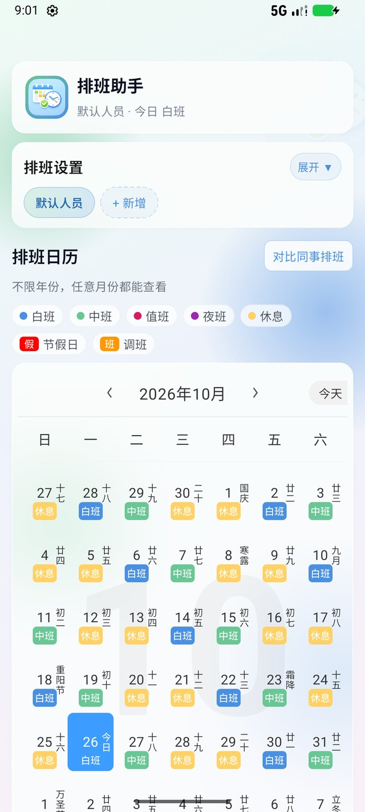
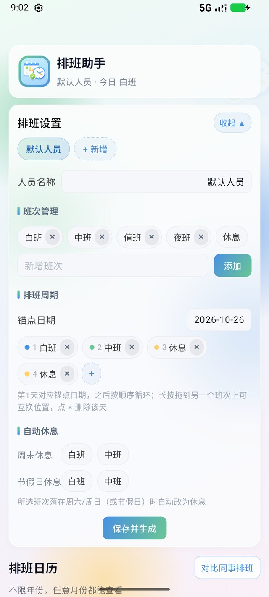
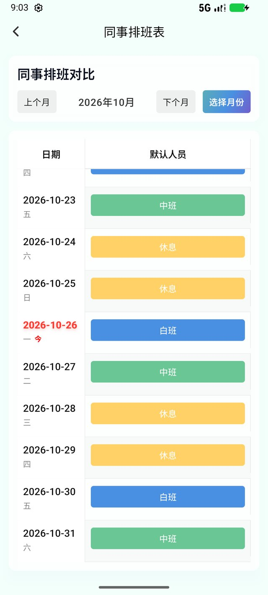

把排班表
装进手机日历
设置一次「排班周期 + 锚点日期」，之后每一天的班次都会自动排好。任意年份都能翻，多个人一起管，还能一键对比同事这个月都上什么班。

为轮班的人做的日历
不是普通日历，而是「按周期自动长出来」的排班表
周期排班，一次设置长期可用
设定排班周期（如 白班 / 中班 / 休息 / 休息）与锚点日期，之后每天按顺序无限循环，不用再一个月一个月地排。
任意年份随时翻
不再限制前后一年，往前往后翻到任何年份、任何月份，班次都能正常显示。
同事排班对比表
一张表看完所有人的整月班次，左右滑动看全员，上下滑动看整月，今天一行自动高亮并滚动到眼前。
多人员独立配置
每个人一套班次、周期与锚点日期；长按人员名称可以拖拽排序，点 × 可以删除。
单日微调
临时调班只需点一下日期，单独指定当天的班次，或者清除这一天的设置，周期本身不受影响。
周末 / 节假日自动休息
指定某些班次落在周六日或节假日时自动变休息，法定假与调休上班日会以「假 / 班」角标标注。
农历 · 节气 · 节日
每个格子里都有农历日期，传统节日、二十四节气、公历节日都一样不少，今天会显示「今日」。
本地保存，不上传
排班数据只存在你自己的手机里，不注册、不登录、不联网也能看，除节假日标记外无需网络。
界面实拍
浅色渐变背景、毛玻璃卡片、圆角药丸标签，与旧版保持同一套设计语言


三步用起来
第一次打开是「默认人员」，把名字和班次改成自己的就行
下载并安装
下载 APK，在手机上允许「安装未知来源应用」，装好后打开即可。
设置班次与周期
点「展开」进入排班设置：改人员名称、增删班次、按顺序填好排班周期，选好锚点日期，点「保存并生成」。
查看与对比
回到日历页左右滑动翻月，上下滑动翻年份；点某一天可以单独改班次。想看同事就点「对比同事排班」。
下载排班助手
Android 原生版本，安装包约 8.2 MB。免费使用，无广告、无内购、无需注册。
下载 paibanzhushou-1.0.4.apk常见问题
装之前可能想知道的几件事
排班数据存在哪里？会联网上传吗？
只保存在手机本地的应用数据里，不会上传到任何服务器，也不需要注册账号。卸载应用会一并删除这些数据。
需要联网吗？
节假日与调休上班日的标记需要联网获取（每天最多请求一次，成功后离线缓存）；其余功能完全离线可用。
换手机怎么迁移？
目前没有云端同步，换机后需要在新手机上重新设置人员与排班周期（一到两分钟即可配好）。
升级安装会丢数据吗？
只要签名一致，覆盖安装会保留原有数据。如果系统提示「签名不一致」，说明之前装的是测试版本，需要先卸载旧版本再安装，此时本地数据会被清除。
支持哪些系统？
Android 7.0（API 24）及以上，Android 12 及以上可获得完整的毛玻璃背景效果。
收费吗？可以商用吗？
免费使用。该软件仅供个人使用，请勿商用。